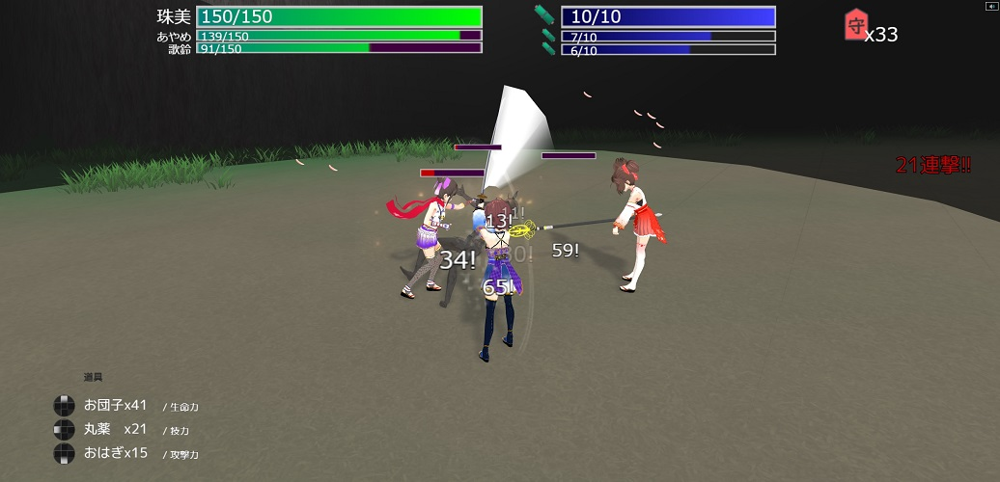
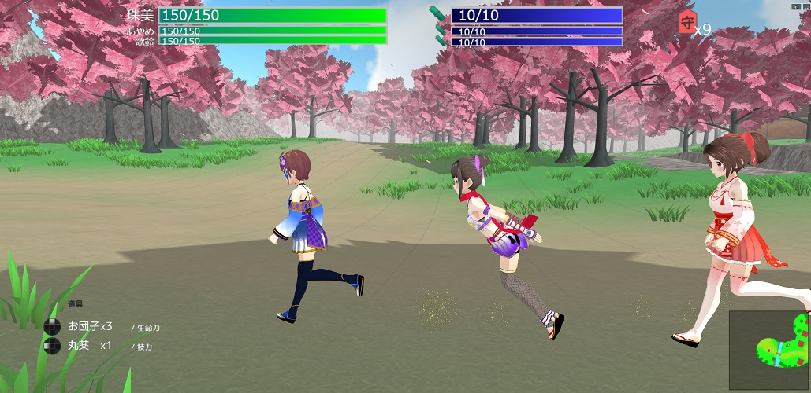
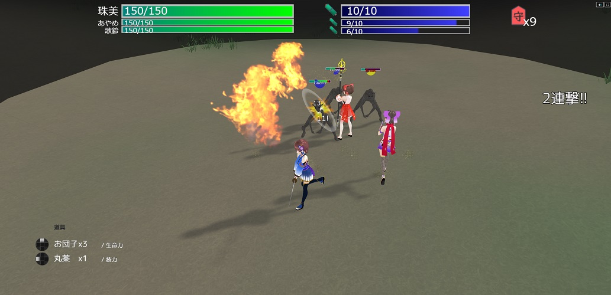
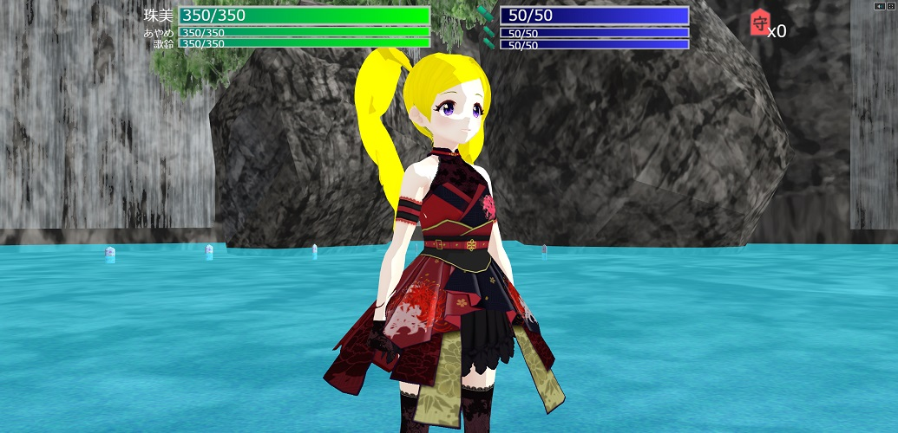
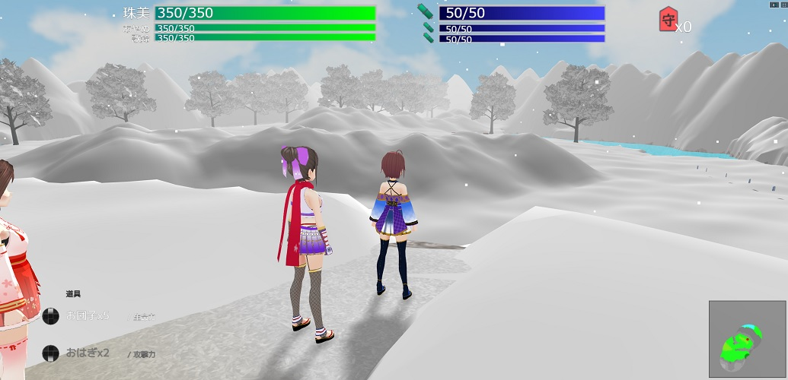
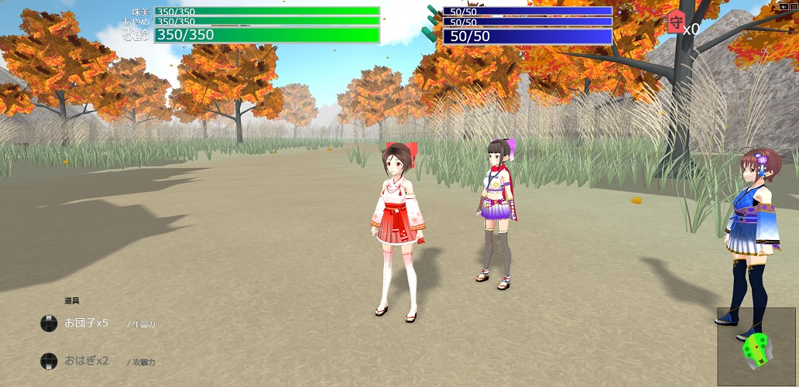

|
可惜夜月と花咲夜が織りなす、（非公式）3DアクションRPG！ シンデレラガールズから脇山珠美、浜口あやめ、道明寺歌鈴、白菊ほたる、 ミリオンライブから天空橋朋花、白石紬、エミリー、周防桃子が登場！ ※バランス未調整・ラスボス～エンディングが含まれない体験版になります。 |
||
|
PC（Windows,Mac問わず）、一部スマートフォン・タブレットなど google chrome推奨 |
||
|
（キーボード・マウス使用時・変更不可） 移動：ASDWもしくは十字キー 決定：Z キャンセル：X 操作キャラ変更：TAB メニュー：C 武術による攻撃：左／右クリック・ホイールクリック ジャンプ：スペース 防御：SHIFT 回復アイテム：1,2,3 |
||
|
（ゲームコントローラ使用時・デフォルト） 決定：○/Ｂ キャンセル：×/Ａ 操作キャラ変更：L1/LB メニュー：OPTION/MENU 武術による攻撃：□/Ｘ・△/Ｙ・○/Ｂ ジャンプ：×/Ａ 防御：R1/RB 回復アイテム：十字ボタン |
||
|
      |
||
| Q.なにするやつですか | A.可惜夜月が主人公の3DアクションRPGです。 ダウンロードしなくてもブラウザで遊べます。（chrome推奨） |
|
| Q.コントローラーは使えますか？ | A.XBOXもしくはDualShockコントローラー(PS4以降)で動作確認しています。XInput対応ならいけると思います。 スマホでやる場合はBluetoothで繋いで下さい。 |
|
| Q.スマホでできる？ | A.メッセージウィンドウがやたらでかい・表示物の文字が小さい等の表示上の問題はありますが動きます。 | |
| Q.重い | A.メニューの「オプション」「環境設定」からパフォーマンスで「軽量」 再起動後軽くなります。 ビデオカード性能を使いますので、オンボードよりハイスペックなスマホのほうが軽快に動くこともあります。 |
|
| Q.クリアするのにどのくらい？ | A.道に迷わず宝箱ほどほどに回収して２時間くらい？ | |
| Q.仲間の２人が障害物に引っかかっても置いていって問題ない？ | A.距離が離れるか、戦闘時には必ず飛んでくるので気にしなくてもいいです | |
| Q.全回復できる宿的なポイントはありませんか？ | A.ほたるの素材交換を何度か行うと全回復してくれます。 | |
| Q.お団子・丸薬の回復量計算どうなってるの？ | A.生命力が減っているほど多くの回復量が割り当てられます。Maxになるまでトータルは変わりません。 （50回復するお団子の使用時生命力が珠美10%、あやめ90%、歌鈴50%なら 回復量は珠美が30、あやめが3、歌鈴が17回復） |
|
| Q.「ススキ平原」のエンカウントがうざったいです。そして宝箱が埋まりません。 | A.よく見ると轍が見えます。そこをたどっていくと比較的ゴールまで避けられるようになっています。 宝箱は最初の戦闘後チュートリアルで教えてもらったことを実践してみましょう。壁際は… |
|
| Q.地形にはまりました／水場から出られません | A.できるだけそうならないように設計していますが、万が一はまった場合メニューの「やり直し」でリトライできます。 水場はどこかに傾斜の緩い場所があるはずなのでそこから出られます。 |
|
| Q.朋花様の居合い切り(?)で死ぬ | A.操作キャラから順番に当ててきます。歌鈴の守護殿を使うか（効果時間に注意）、 R1で防御→L1でキャラ切り替え→R1で防御→（繰り返し）といった感じで一人ずつダメージを軽減するのが確実です。 |
|
| Q.あれ（朋花様倒したあとの集合する会話イベント）で終わり？ | A.正式版ではこのあとに真のラスボスとエンディングが待ち受けています。おたのしみに | |
| Q.正式版はラスト以外の変更点はありますか？ | A.体験版は比較的簡単なため、手応えのあるバランスになるよう予定しています。 あと歌鈴の守護殿が死にスキルになっているので別の武術に変更予定です。 （守護殿は「おはぎ」のようにアイテム化します） |
|
| Q.全部ひとりで作ったの？ | A.10ヶ月ほどかかりました… 大部分がそうですが、フリー素材も多いので正式版でクレジット出しておきます | |
| Q.キャラの3Dモデルは何で作ったの？配布ある？ | A.VRoid Studioで自作しました。需要があれば配布します | |
| Q.サーバーに何かしらの情報を送りますか？ | A.GoogleAnalyticsでゲームの進行度を通知する以外には何もしていません。 セーブデータはブラウザのローカルストレージに保存されますので、 PCやスマホの引き継ぎはできません。 |
|
| 更新履歴 |
21/05/01 リリース |
|
| サポートとか苦情とか感想とか(?) |
珠美の踏み台 @megane_donuts 踏み台工房 |